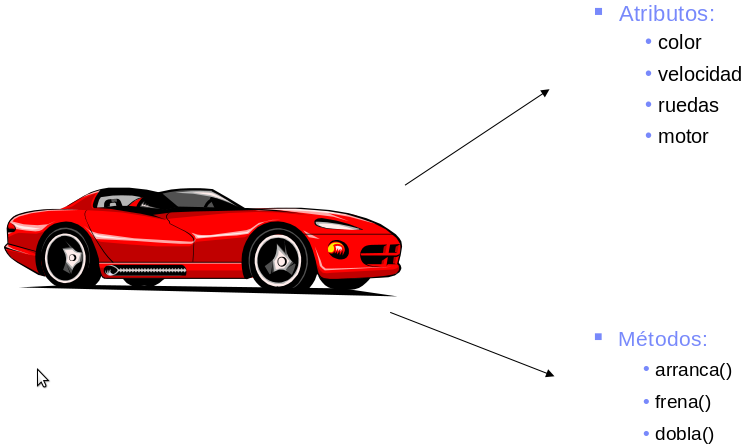

Idea central: modelar con clases (plantillas) y objetos (instancias) que tienen identidad, estado (atributos) y comportamiento (métodos). La POO busca representar problemas del mundo real de forma ordenada, flexible y más natural que la simple secuencia de funciones.
Principios clave
- Encapsulación: ocultar detalles y exponer una interfaz clara. Permite modificar la implementación sin romper el resto del sistema.
- Abstracción: enfocarse en lo esencial: no mostrar cómo se hace algo, solo qué hace. Reduce ruido y simplifica modelos complejos.
- Herencia: especializar comportamientos. Útil para compartir lógica común, pero debe usarse con criterio.
- Polimorfismo: misma interfaz, implementaciones distintas. Permite intercambiar objetos según su rol, no según su tipo exacto.
- Composición > Herencia: armar objetos por partes (agregar componentes). Favorece flexibilidad y evita árboles de herencia gigante.
- Responsabilidad única: cada clase debe hacer solo una cosa, y hacerla bien. Mantiene el diseño limpio y testeable.
Mini-ejemplo (juegos)
// Clases: Jugador, Enemigo, Proyectil, Muro.
// Estado: vida, posición, daño, velocidad.
// Métodos: mover(), atacar(), colisiona(obj).
// Polimorfismo: dañar(obj) funciona con Muro o Enemigo.
// Composición: un Enemigo puede tener un Comportamiento (IA) intercambiable.
// Encapsulación: posición solo se modifica mediante mover(), no directamente.
// Abstracción: atacar() no expone cómo calcula el daño, solo que lo aplica.
Ventajas prácticas
- Mantenibilidad y reutilización: clases bien diseñadas se reaprovechan en nuevos módulos o juegos.
- Menos acoplamiento si hay buenas interfaces: se pueden reemplazar partes del código sin tocar el resto.
- Tests más claros por responsabilidades pequeñas: cada clase se puede probar en aislamiento.
- Modelos más expresivos: es más fácil leer código que refleja entidades reales (Jugador, Enemigo, Arma...).
Errores comunes
- Clase Dios: hace todo → dividir en responsabilidades pequeñas y delegar tareas.
- Herencia excesiva: preferir composición; evita jerarquías rígidas y difíciles de mantener.
- Atributos públicos sin control: encapsular con getters/setters para proteger estado interno.
- Mezclar lógica de vista con lógica de modelo: separar responsabilidades (MVC u otro patrón).
- Crear clases por crear: no todo necesita una clase; solo cuando aporta claridad o estructura.
Referencias
POO (wiki) · Introducción (IBM) · Debate comunidad
Sugerencia para reader: modelá Cancion y Playlist (agregar, siguiente, anterior) usando composición.
Pregunta para reader: ¿Qué ejemplo real querés modelar en objetos para practicar?
Hazme hover para ver la imagen!!
